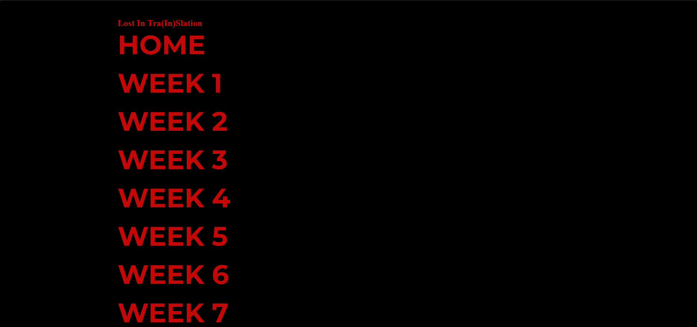
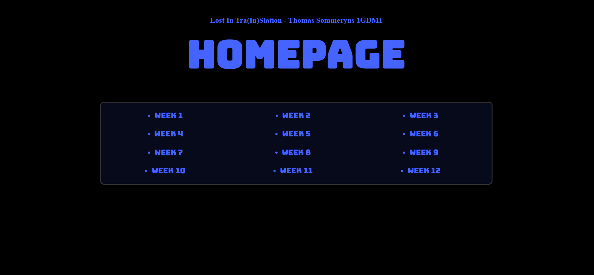
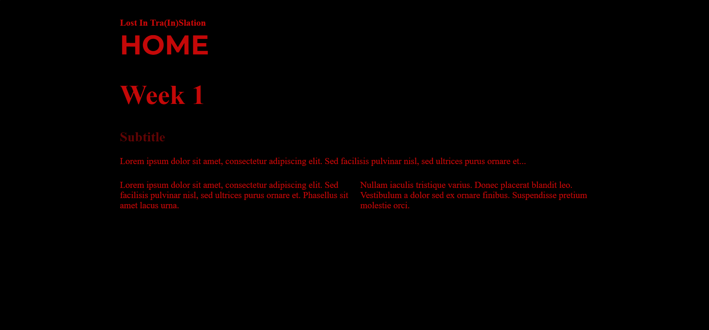
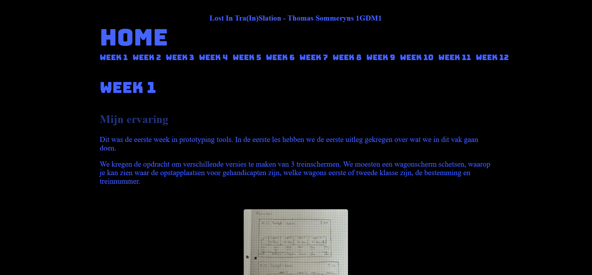

In deze week moesten we alles dat we hadden gemaakt voor onze website in html omzetten naar een Tailwind versie.
Vele leerlingen met een windows computer hadden problemen met het installeren van Tailwind, mezelf inbegrepen. Na veel proberen en wat hulp is het me uiteindelijk toch gelukt om Tailwind werkend te krijgen op mijn computer.
Na het omzetten naar Tailwind, wou ik dat mijn website dezelfde stijl had als mijn mobiele schermen. In de foto hieronder zie je hoe het eruitzag voordat ik de stijl had aangepast. Je ziet ook dat ik nog niet veel had veranderd aan de website.


Ik heb ook wat meer interactieve elementen toegevoegd aan de website zodat het een prettigere ervaring is voor de gebruiker. Door dezelfde stijl te gebruiken als in mijn mobiele schermen heb ik geprobeerd een gevoel van samenhang te creëren tussen mijn verschillende ontwerpen.

